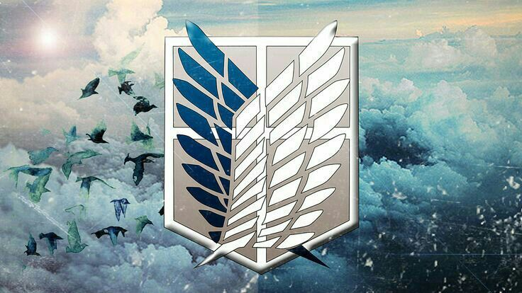
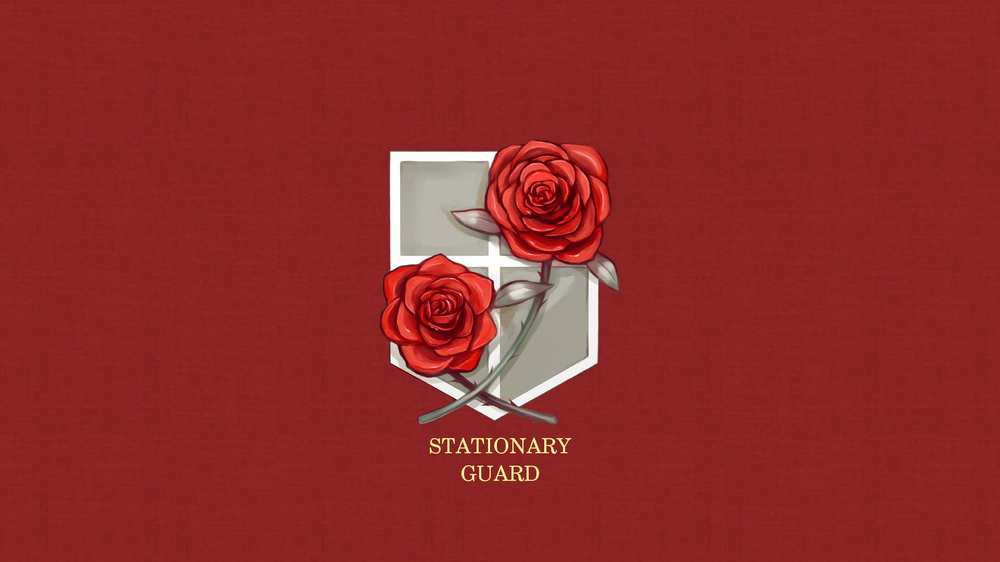
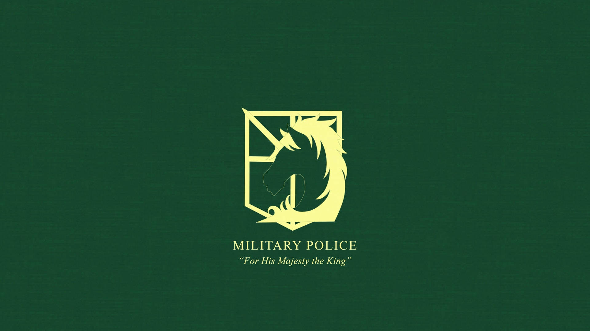
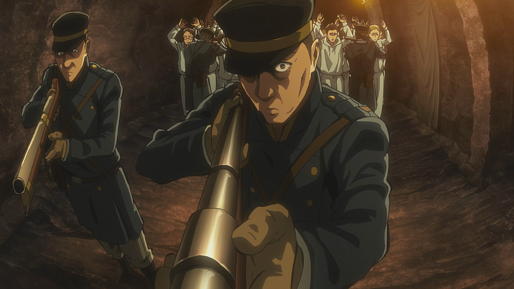
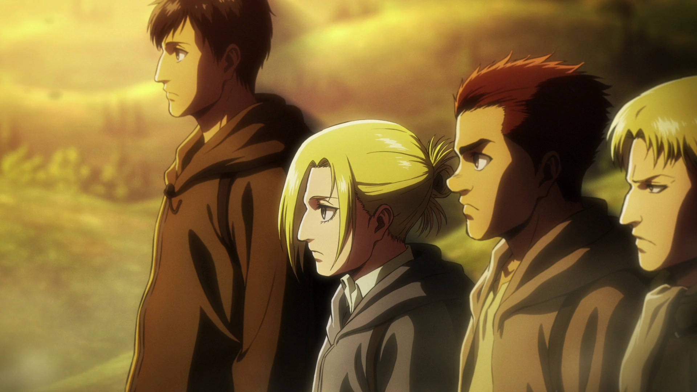

Organizações

Tropa de Exploração
- A Tropa de Exploração é o grupo mais idealista e complexo dentro das muralhas. Enquanto as outras forças se dedicam a manter a ordem ou preservar o status quo, a Exploração se arrisca constantemente para buscar conhecimento e libertar a humanidade da prisão das muralhas. É uma organização movida por sacrifício e visão de longo prazo: seus membros sabem que suas chances de sobrevivência são baixas, mas acreditam que apenas entendendo o mundo exterior a humanidade poderá ter um futuro real. A tropa representa coragem, rebeldia contra a ignorância e a vontade de enfrentar a realidade, por mais cruel que seja. Sua função vai além do combate aos Titãs — eles são os portadores da verdade e os responsáveis por desafiar a narrativa construída pelo governo. Por isso, mesmo sendo vistos como loucos por grande parte da população, eles carregam um peso moral enorme: são aqueles que lutam pela liberdade que a maioria nem sabe que perdeu.

Guarnição
- A Guarnição é o pilar da estabilidade dentro das muralhas. Seu papel é garantir que o cotidiano das pessoas seja possível, mantendo as defesas ativas, supervisionando cidades e preparando respostas a emergências. Embora não tenha o heroísmo extremo da Tropa de Exploração, é uma força essencial para a sobrevivência diária. Eles lidam diretamente com crises repentinas — como quebras das muralhas — mas também realizam trabalhos constantes e invisíveis, como manutenção, patrulhas e organização civil. A Guarnição é formada por soldados que variam de altamente dedicados a totalmente acomodados, justamente porque seu trabalho costuma oscilar entre momentos de absoluta tranquilidade e situações de completo caos. Essa dualidade faz dela uma organização humana e prática: não busca grandiosidade, mas sim a funcionalidade contínua da sociedade.

Polícia Militar
- A Polícia Militar representa o lado mais político e decadente da estrutura militar eldiana. Criada para proteger o rei e manter a ordem interna, ela se tornou um símbolo de privilégio e corrupção. Por aceitar apenas os 10 melhores cadetes por turma, atrai aqueles que buscam conforto e poder, e não necessariamente justiça. Isolados das ameaças reais dos Titãs, seus membros acabam distantes da realidade e frequentemente usam sua autoridade para controlar, intimidar ou se beneficiar da população. Em vez de serem defensores da lei, tornam-se agentes de um sistema desigual que protege os interesses da elite. Mesmo assim, sua existência é fundamental para entender como o governo das muralhas funcionava: não como uma democracia, mas como um regime que manipulava e reprimia para manter o controle.

Exército de Marley
- O Exército de Marley funciona como uma máquina militar moderna, sustentada por propaganda, expansionismo e poder tecnológico. Ele enxerga a guerra como uma ferramenta política e econômica, e usa os Titãs como armas estratégicas para subjugar outras nações. Para manter seu domínio, Marley reforça um sistema rígido de obediência, onde seus soldados acreditam estar salvando o mundo ao subjugar os supostos “demônios” de Eldia. No entanto, esse exército depende profundamente da exploração dos próprios eldianos que diz odiar — algo que revela sua hipocrisia estrutural. Seus comandantes são mais políticos do que guerreiros, e o exército se apoia em superioridade numérica e ideológica para manter seu império. Ele representa um poder forte, mas decadente e preso a métodos do passado, o que acaba contribuindo para sua queda.

Guerreiros de Marley
- Os Guerreiros são a face mais trágica da militarização marleyana. São crianças eldianas treinadas desde cedo para se tornarem armas vivas ao herdar Titãs Primordiais. Desde pequenos, são cercados por propaganda, moldados a acreditar que lutar por Marley é a única forma de garantir segurança para suas famílias. Assim, crescem internalizando culpa, honra distorcida e patriotismo forçado. Apesar de serem soldados de elite, carregam um peso emocional enorme, pois vivem para cumprir uma missão quase suicida e têm seu tempo de vida reduzido por causa da maldição do Titã. Eles simbolizam como um Estado pode manipular e sacrificar vidas jovens para manter seu poder. Ao mesmo tempo, mostram que o conflito entre Eldia e Marley é, no fundo, um ciclo de ódio imposto — eldianos obrigados a lutar contra eldianos por ideologias que não eram realmente suas.

Yeageristas
- Os Yeageristas surgem como uma reação explosiva ao medo, à impotência e à frustração acumulada dentro das muralhas. São formados por civis e soldados que enxergam em Eren Yeager a única chance de Eldia sobreviver em um mundo que a odeia. Para eles, diplomacia é uma ilusão e esperar é morrer. Movidos por ódio, orgulho e desespero, acreditam que Eren deve liderar Eldia com força absoluta, usando o Titã Fundador como arma suprema. Os Yeageristas misturam radicalização política com culto à personalidade, transformando Eren em um símbolo de resistência e vingança. Tornam-se a facção dominante dentro das muralhas através de métodos agressivos e golpes internos, mostrando até onde uma população encurralada pode ir quando é guiada pelo medo de extinção. São talvez a representação mais crua do colapso social da série — um movimento nascido da esperança, mas alimentado pela violência.